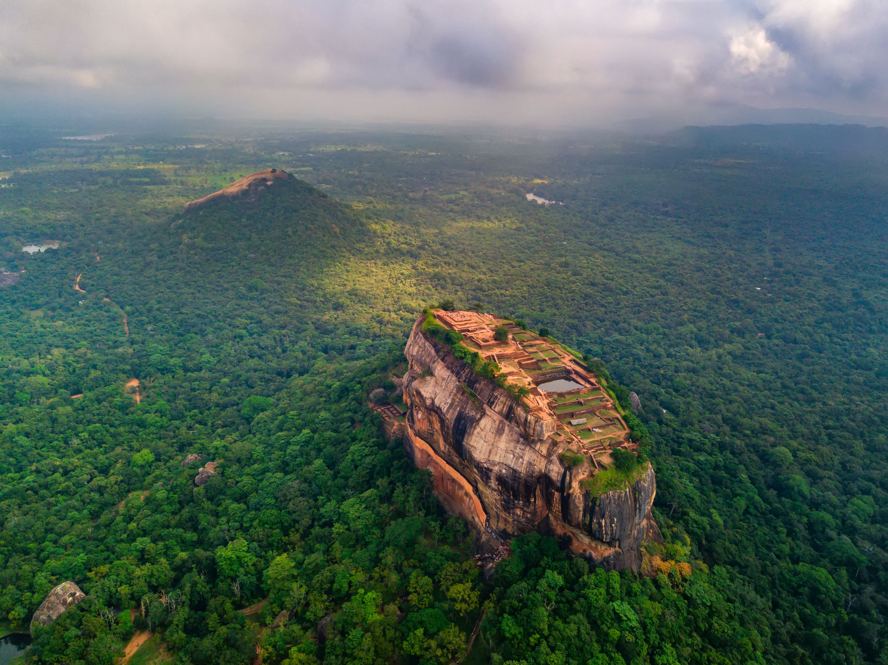
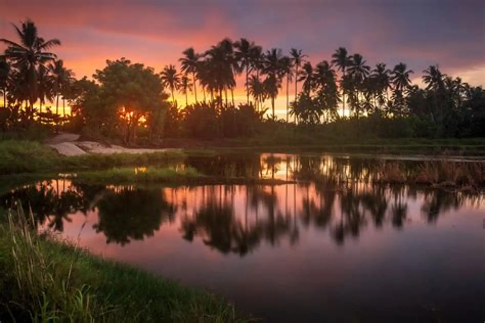

Beautiful Sri Lankan Landscape

Sri Lanka is famous for its beautiful natural landscapes.
Discover the beauty of the Pearl of the Indian Ocean
Sri Lanka is a beautiful island with a rich natural environment. It has mountains, forests, waterfalls, rivers, beaches and national parks. The country is also home to many animals, birds and plants.
Sri Lanka is well known for its biodiversity and wildlife. Elephants, leopards, sloth bears and many endemic species can be found in different parts of the country.
Sri Lanka is famous for its beautiful natural landscapes.



| Place | Location | Famous For |
|---|---|---|
| Yala National Park | Southern Sri Lanka | Leopards & Wildlife |
| Horton Plains | Nuwara Eliya | Mountains & Waterfalls |
| Sinharaja Forest | Sabaragamuwa | Rainforest & Biodiversity |
| Ella | Badulla | Mountains & Tea Fields |
Enjoy the sounds of nature.
© 2026 Nature of Sri Lanka
Protect Nature • Protect Our Future 🌱